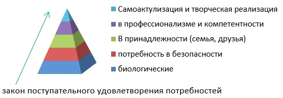

Вопросы:
Все живые существа при взаимодействии с окружающей средой проявляют активность. Активность человека в силу ее специфичности получила название деятельность.
Деятельность – это высшая сознательно-регулируемая форма взаимодействия человека с окружающей средой, в процессе которой он творчески воздействует на окружающий мир и познает свое место в мире.
Признаки (характеристики) деятельности:
Внутренняя структура деятельности: потребности -> мотивы -> цели -> задачи.
Потребность – источник активности живых существ; это состояние индивида выражающая его завиимость от конкретных условий жизни.
Виды потребностей:
Иерархия потребностей по Маслоу:
Мотив – то, ради чего совершается деятельность.
Для того чтобы деятельность возникла, необходимо соотнести потребность с предметом который может ее удовлетворить, т.е осознать потребность. Опредмеченная, осознанная потребность является мотивом деятельности и у деятельности появляется направление.
Цель – психический образ будущего результата деятельности; цель всегда осознанна и является самым важным элементом деятельности.
Задача – разделение единой цели на более мелкие элементы.
3 вопросПервоначально приступая к какой-либо деятельности, человек не располагает сложившейся системой способов ее осуществления. Он сознательно контролирует ход операций и движений, но в результате повторения человек приобретает возможность выполнять некоторые элементы деятельности без сознательного контроля, т.е. контроль переносится в зону бессознательного.
Автоматизация – выключение из зоны сознательного контроля.
Навык – элемент деятельности, который благодаря тренировке или повторению выполняется автоматически.
Виды навыков:
Этапы формирования навыков:
Умение – это способность выполнять деятельность, на качественно высоком уровне опираясь на уже имеющиеся знания и навыки.
4 вопросСуществуют три вида деятельности, генетически сменяющих друг друга, но существующих на протяжении всей жизни:
Ведущая деятельность – деятельность, наиболее полно соответствует запросам личности на определенном возрастном этапе; ведет за собой развитие и в ней формируются основные психические новообразования.